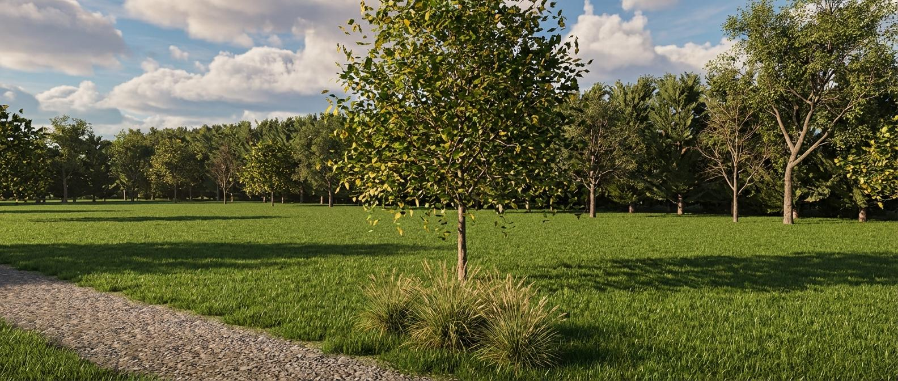
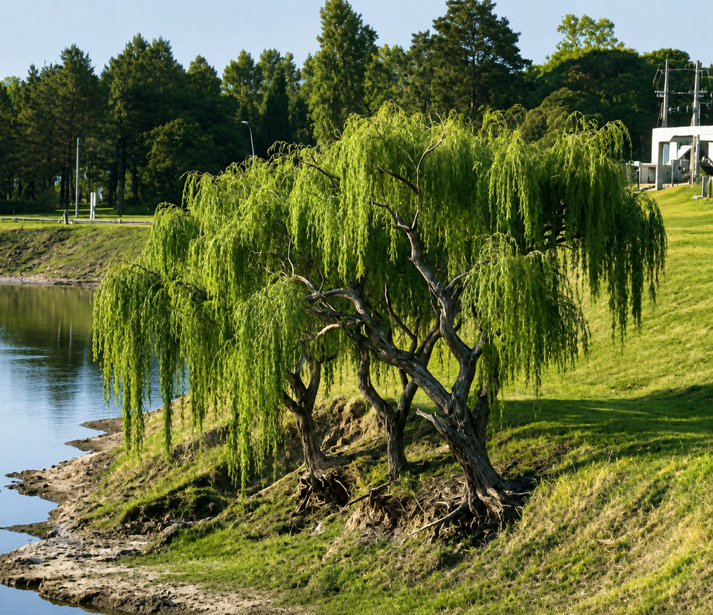
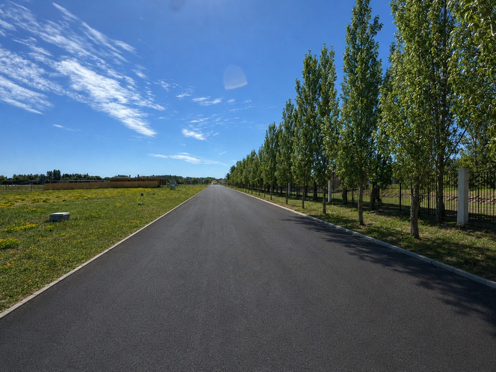
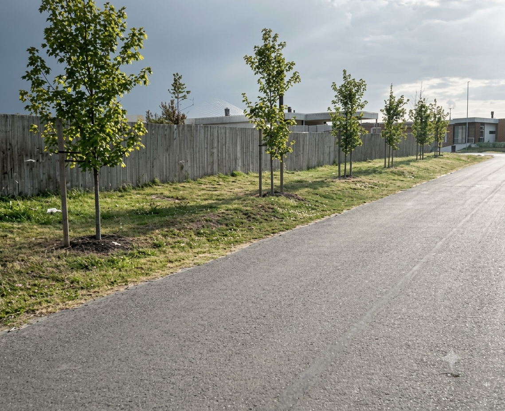

01
Presentacion Ejecutiva — Comisión de Areas Verdes
Barrio La Juana
Areas Verdes
y Paisajismo
Consolidando la identidad de nuestro Barrio Jardin
Canelones, Uruguay
Junio 2026
Documento de trabajo
Proyecto Areas VerdesContexto
Situacion Actual02 / 29
02
Diagnostico
Contexto y Situacion Actual
Condiciones del sitio
- Zona abierta de Canelones, vientos fuertes del cuadrante Sur/Sureste
- Suelo arcilloso (condiciona seleccion de especies)
- 2 lagos de ~20.000 m2 con erosion en orillas
Realidad actual
- 11 manzanas (A–K) con 267 lotes residenciales: 132 habitados, 23 en construccion, 112 vacios
- Densidad arborea mas cercana a pradera ganadera que a barrio residencial
- Plan de forestacion original no completado por el desarrollador
- Estilo arquitectonico moderno (beige, piedra, WPC) sin entorno verde acorde
Proyecto Areas VerdesFuentes
Documentos de trabajo03 / 29
03
Base del proyecto
Documentos de Trabajo
Base del proyecto
Comision de Areas Verdes
- Proyecto operativo zona por zona (rotondas, jardines, lagos, tanques)
- Seleccion de especies — plantas bajas (dietes, paspalum, pennisetum, pittosporum, stipas) y arbolado (fresnos, casuarinas, alamos, acer bugeriano, liquidambar)
- Mobiliario urbano, iluminacion, senalizacion
- Planilla de presupuesto detallada por etapas
- Asesor tecnico: Sebastian (jardinero)
- Marco juridico y financiero para asamblea
- Protocolo de mantenimiento obligatorio
- Esquema de cuotificacion y financiamiento
04
Plan de intervención
El Proyecto
5 zonas de intervención para transformar el paisaje del barrio La Juana
Proyecto Areas VerdesEl Proyecto
Perímetro y Fondo05 / 29
05

Perímetro
Perímetro F y Fondo
240 casuarinas · Anacahuitas, Lapachos y Ibirapitás · Especies nativas · Barrera natural contra vientos del Sur
Proyecto Areas VerdesEl Proyecto
Zona Lagos06 / 29
06

Lagos
Zona Lagos
15 Sauces Criollos · Control de erosión costera · Buffer ecológico
Proyecto Areas VerdesEl Proyecto
Perímetro Aromos07 / 29
07

Aromos
Perímetro Aromos
100 Álamos Piramidales · Cortina simple · Límite vertical nítido en el borde norte del barrio
Proyecto Areas VerdesEl Proyecto
Arbolado de Veredas08 / 29
08

Veredas
Arbolado de Veredas
2 árboles por lote · 220 Liquidámbar · 190 Fresnos · 230 Acer buergerianum · ~640 ejemplares en total
Proyecto Areas VerdesEl Proyecto
Rotondas y Areas Comunes09 / 29
09

Rotondas
Rotondas y Areas Comunes
6 rotondas rediseñadas · Jacarandá protagonista · Gramíneas y herbáceas perennes · Casetas en negro mate · Plaza Principal
Proyecto Areas VerdesRenders · Etapa 1
Rotonda Fondo y Zona Tanques10 / 29
10
Etapa 1
Rotonda Fondo y Zona Tanques
R1-CDG
Stipas, Lavandas, Dietes, Romero y Penisetum. Establece el lenguaje estético del proyecto.
Zona Tanques
Integración visual mediante lomada natural y Paspalum Haumanii.
Proyecto Areas VerdesRenders · Etapa 2
Manzana R2, R3 e Interior11 / 29
11
Etapa 2
Manzana R2, R3 e Interior
R2-ACK
Continuidad del lenguaje botánico establecido, reforzando la identidad visual con gramíneas y herbáceas perennes de textura fina.
R3-BED
Mimetización estratégica de las casetas de UTE mediante vegetación volumétrica y acabado contemporáneo en negro mate.
Jardines I y E
Espacios proyectados para desarrollar en fases posteriores, manteniendo la coherencia sensorial del proyecto.
Proyecto Areas VerdesRenders · Etapa 3
Medio · Rotondas R4 y R512 / 29
12
Etapa 3
Medio · Rotondas R4 y R5 · Continuidad Estética
R4-ABC y R5-BEF
Mantenimiento del vocabulario botánico con gramíneas de porte medio y alto que unifican el recorrido visual.
Estrategia de Ocultación
Gramíneas con volumen para ocultar elementos técnicos. El acabado negro mate aporta un perfil contemporáneo y discreto.
Casetas UTE
Mimetización mediante vegetación perimetral densa y tratamiento arquitectónico minimalista.
Proyecto Areas VerdesRenders · Etapa 4
Frente · R6, Rotonda Principal y Ósmosis13 / 29
13
Etapa 4
Frente · R6, Rotonda Principal y Ósmosis
R6-AK
Stipas · Salvia leucantha · Dietes · Romero · Penisetum · Gaura
Rotonda Principal
Pendiente de diseño.
Zona Ósmosis
Pendiente de diseño.
14
Impacto financiero
El Presupuesto
Estructura de costos, financiamiento y gobernanza del proyecto
Proyecto Areas VerdesInversion
Presupuesto15 / 29
15
Planilla de Presupuesto
Presupuesto por Etapas
| Etapa | Descripcion | Inversion ($) | % Total |
|---|
| Etapa 1 | Perimetro, Lagos y Arbolado de Veredas | 1.569.600 | 48% |
| Etapa 2 | Rotondas R1 a R4 | 504.470 | 15% |
| Etapa 3 | Rotondas R5–R6, Jardín G (Plaza Principal), Rotonda Principal | 607.310 | 18% |
| Etapa 4 | Zona Tanques, Jardín I, Jardín E y Zona Osmosis | 510.710 | 15% |
| Etapa 5 | Jardín F y Camino de Colinas | pendiente | — |
| Contingencia | Reposicion por mortandad año 1 (10–15%) | 210.000 | 6% |
| Total Proyecto (sin Etapa 5) | $3.402.090 | |
Nota: Los costos estan en pesos uruguayos. La Etapa 1 concentra el 48% de la inversion porque incluye todo el arbolado de veredas (640 arboles) y el perimetro cortavientos. La Etapa 5 (Jardin F y Camino de Colinas) esta pendiente de presupuesto. El frente a Camino Los Aromos ya esta cubierto en Etapa 1 con 100 alamos piramidales.
Proyecto Areas VerdesDetalle
Etapa 116 / 29
16
La etapa mas significativa
Etapa 1: Perimetro, Lagos y Veredas
Perimetro y Lagos
$630.800
| Casuarinas (1,5mt) | 240 unid. |
| Alamo Piramidal | 100 unid. |
| Anacahuita (2,5mt) | 32 unid. |
| Ibirapita (2mt) | 17 unid. |
| Lapacho Rosado (2mt) | 16 unid. |
| Guayabo del Pais (2mt) | 16 unid. |
| Sauce Criollo (2mt) | 15 unid. |
Arbolado de Veredas
$938.800
| Acer Bugeriano (2,5mt) | 230 unid. |
| Liquidambar (2mt) | 220 unid. |
| Fresno (2mt) | 190 unid. |
| Total arboles veredas | 640 |
Incluye: compost 12m3, 640 tutores, mano de obra 60 dias y riego inicial.
Proyecto Areas VerdesDetalle
Etapa 217 / 29
17
4 rotondas interiores
Etapa 2: Rotondas R1 a R4
| Dietes | 12 unid. |
| Stipas | 9 unid. |
| Pittosporum | 6 unid. |
| Salvia Leucantha | 5 unid. |
| Jacaranda | 1 unid. |
| Cesped Bermuda | 80 m² |
| Luces | 4 unid. |
| Pennisetum Rupeli | 30 unid. |
| Paspalum Haumanii | 13 unid. |
| Luces | 8 unid. |
| Pennisetum Rupeli | 40 unid. |
| Luces | 8 unid. |
| Corteza de Pino | 2 m³ |
| Pintura negro mate | 30 m² |
| Pennisetum Rupeli | 50 unid. |
| Jacaranda | 2 unid. |
| Malla Geotextil | 60 m² |
Todas las rotondas incluyen riego inicial, mano de obra (10 dias c/u) y corteza de pino como cobertura.
Las casetas técnicas (UTE, caños) se tratan con pintura negro mate para que se integren visualmente al entorno y no compitan con la vegetación.
Proyecto Areas VerdesDetalle
Etapa 318 / 29
18
Rotondas, Jardin G y Rotonda Principal
Etapa 3: R5–R6, Jardín G y Rotonda Principal
| Pittosporum | 6 unid. |
| Dietes | 10 unid. |
| Stipas | 9 unid. |
| Gaura + Santolina | 15 unid. |
| Jacaranda | 1 unid. |
| Luces | 8 unid. |
| Romeros + Lavandas | 19 unid. |
| Dietes + Stipas | 29 unid. |
| Jacaranda | 1 unid. |
| Luces | 4 unid. |
Jardín G (Plaza Principal)
$261.000
| Panes Bermuda | 800 m² |
| Bancos | — |
| Mano de obra | — |
| Cerco perimetral | ~$100.000 |
Rotonda Principal (Entrada 1)
~$78.000
| Pintura negro mate | 30 m² |
| Mano de obra | — |
Proyecto Areas VerdesDetalle
Etapa 419 / 29
19
Zona Tanques y Jardines
Etapa 4: Zona Tanques, Jardines I y E
| Paspalum Haumanii | 23 unid. |
| Panes Bermuda | 70 m² |
| Relleno Tierra | 20 m³ |
| Movimiento de tierra | — |
| Casuarinas (1,5mt) | 15 unid. |
| Fresno (2mt) | 6 unid. |
| Luces solares LED | 4 unid. |
| Tutores | 21 unid. |
| Panes Bermuda | 650 m² |
| Eucaliptus Cinerea | 7 unid. |
| Pennisetum Rupeli | 9 unid. |
| Paspalum Haumanii | 14 unid. |
| Pintura negro mate | 30 m² |
Placeholder pendiente de desglose. Trabajos de osmosis a definir en alcance y materiales.
Proyecto Areas VerdesDetalle
Etapa 520 / 29
20
Zonas a presupuestar
Etapa 5: Jardín F y Camino de Colinas
Jardín F
Pendiente de relevamiento y presupuesto.
Frente a Camino de Colinas
Pendiente de relevamiento y presupuesto.
Nota: El frente a Camino Los Aromos ya está cubierto en Etapa 1 con 100 álamos piramidales.
Proyecto Areas VerdesFinanzas
Impacto por lote21 / 29
21
Proyeccion preliminar
Impacto Financiero por Lote
~$1.031
Cuota mínima (12m)
Estos valores no contemplan el impacto de la morosidad, el costo de mantenimiento recurrente, ni la tasa de reposicion. Los precios de especies estan pendientes de validacion en viveros y podrian incrementar el presupuesto base.
Propuesta de cuota extraordinaria
$1.500
por lote
durante 12 meses
Total recaudado
$4.806.000
Margen de contingencia
$1.403.910
La cuota propuesta supera el costo base por lote con el fin de constituir un margen de respaldo frente a imprevistos en la ejecucion del proyecto. Dado que su desarrollo esta sujeto a condiciones climaticas y estacionales, no es posible garantizar la estabilidad de precios a lo largo del plazo de ejecucion. El fondo excedente permanece bajo la estructura de gobernanza aprobada y no se destina a otros rubros operativos del barrio.
Proyecto Areas VerdesMarco Legal
Asamblea22 / 29
22
Para la asamblea de propietarios
Marco Legal e Institucional
Fundamento
- Arbolado y paisajismo son infraestructura verde esencial, comparable a red vial, drenaje o iluminacion.
- El plan de forestacion original no fue completado por el desarrollador. Corresponde a los copropietarios asumir la iniciativa.
- Beneficio indivisible y permanente: calidad ambiental, valorizacion inmobiliaria, proteccion contra viento y erosion.
- Financiacion como gasto comun extraordinario (obligatorio, no voluntario).
Puntos a someter a votacion
01
Aprobar el proyecto integral
Las 5 etapas de areas verdes y paisajismo como bloque unico. La Etapa 5 esta pendiente de presupuesto.
02
Aprobar esquema de financiamiento
Cuota extraordinaria mensual por lote durante el plazo definido.
03
Facultar gobernanza para ejecutar
Autorizar la estructura de control para gestionar fondos y proveedores.
Proyecto Areas VerdesDecisiones
Decisiones clave23 / 29
23
Definiciones tomadas
Decisiones Clave
02
Etapas sin orden rigido de ejecucion
Las etapas se presentan como zonas de intervencion. La sugerencia de orden es: primero el arbolado y perimetros (Etapa 1, base estructural del proyecto), y luego abordar las etapas de rotondas y jardines desde el frente del barrio — la cara visible — hacia el fondo. Sin imponer secuencia obligatoria.
03
Costos primero, morosidad despues
El presupuesto se calcula sobre la totalidad de los lotes. La morosidad (estimada en 26%) se trata como riesgo de gestion financiera, no como ajuste al presupuesto base.
04
Mantenimiento y riego como pendiente explicito
El presupuesto actual cubre provision de agua inicial (cisterna). Falta cerrar una propuesta de mantenimiento y riego recurrente para al menos el primer ano post-plantacion.
Proyecto Areas VerdesGobernanza
Estructura de control24 / 29
24
Estructura propuesta
Gobernanza Financiera
| Funcion | Responsable |
|---|
Aprobacion de compras del proyecto
Autoriza todas las ordenes contra presupuesto aprobado | Comision de Areas Verdes |
Direccion y supervision tecnica
Valida calidad de ejecucion | A definir — llevar a votacion |
Liberacion de pagos
Ejecuta el pago tras recepcion conforme | Administracion del barrio |
Control financiero
Seguimiento fondos vs. presupuesto | Administracion (fondo separado del operativo general) |
Rendicion de cuentas
Reporte avance fisico y financiero | Bimensual — Comision de Areas Verdes al Consejo Directivo |
Los fondos recaudados se gestionan de forma separada al presupuesto operativo general del barrio, asegurando que no se desvien a otros rubros.
Proyecto Areas VerdesMantenimiento
Protocolo obligatorio25 / 29
25
Proteger la inversion
Protocolo de Mantenimiento
| Tarea | Verano | Invierno | Detalle clave |
|---|
| Riego | 3x / semana | Quincenal | 20-30 litros por arbol en cazuela |
| Hormigas | Semanal | Mensual | Cebo granulado + barrera fisica |
| Cazuelas | Mensual | Mensual | Sacar yuyos, reponer mulch 5-10cm |
| Tutores | Mensual | Trimestral | Ajustar ataduras, enderezar post-tormenta |
| Bordeadora | SIEMPRE | SIEMPRE | Prohibido tocar el tronco |
| Poda | Prohibida 2 anos | Solo ramas secas o quebradas |
Dato critico: El 40% de arboles jovenes en barrios privados mueren por anillado de bordeadora. El protocolo de mantenimiento no es opcional: es la diferencia entre proteger o perder la inversion.
Proyecto Areas VerdesA discutir
Alternativas26 / 29
26
Para definir con el Consejo
Alternativas: Dirección Técnica y Mantenimiento
Dirección y supervisión técnica del proyecto — a votación
Opcion A
Comision de Areas Verdes
- Conoce el proyecto en profundidad
- Sin costo adicional
- Requiere compromiso sostenido del equipo voluntario
Opcion B
Profesional en paisajismo
- Dirección y supervisión técnica externa especializada
- Costo adicional — pendiente de cotización
Quien ejecuta el mantenimiento
Opcion A
Reforzar equipo actual
- Dedicacion exclusiva a plantas y arboles dentro del equipo existente
- Menor costo, continuidad operativa
- Sin conflicto laboral ni senal de desconfianza
Opcion B
Servicio tercerizado
- Mayor costo operativo
- Riesgo: conflicto de alcance con equipo actual (cesped vs. arboles)
- Riesgo: senal de desconfianza hacia el equipo existente
Proyecto Areas VerdesPendientes
A resolver — 1 / 227 / 29
27
Requieren definicion
Pendientes de Resolucion
01
Gobernanza del proyecto
Direccion tecnica, flujo de pagos, control de calidad, reportes de avance. La administracion libera fondos pero necesita estructura de control.
02
Mantenimiento y riego (ano 1)
640+ arboles nuevos requieren riego sistematico (3x/semana en verano), control de hormigas, tutores y proteccion contra bordeadora.
03
Validar Acer Buergerianum
230 unidades para calles colindantes a los lagos. Confirmar con Sebastián aptitud de la especie para viento y suelo arcilloso. Determinar si sus raices pueden comprometer canos de desague y saneamiento existentes.
04
Definir alcance de veredas
Precisar si los 230 arboles van en esquinas sin casas al frente de cada manzana, o en todos los frentes de lote. Determina ubicacion, cantidad real y riesgo de raices sobre canerias existentes.
05
Tasa de reposicion — contingencia incluida
Mortandad estimada 10-15% = 64-96 arboles. Partida de contingencia $210.000 UYU incorporada al presupuesto (plantas + mano de obra).
Proyecto Areas VerdesPendientes
A resolver — 2 / 228 / 29
28
Requieren definicion
Pendientes de Resolucion
08
Zona Osmosis — Etapa 4 (Placeholder)
Incluida en Etapa 4 con $150.000 UYU como placeholder. Pendiente definir alcance y desglose real de los trabajos.
09
Etapa 5 — Presupuestar dos zonas
Jardin F y Frente a Camino de Colinas pendientes de relevamiento y presupuesto. Camino Los Aromos ya cubierto en Etapa 1 (100 alamos piramidales).
11
Validar precios de especies en viveros
Referencia Vivero El Ceibo: Acer Bugeriano ~$2.500 (vs $890), Liquidambar ~$2.500 (vs $850), Fresno ~$1.200 (vs $850). Impacto potencial en Etapa 1: +$799.800 UYU adicionales.
29
Hoja de ruta
Proximos Pasos
01Cerrar pendientes de presupuesto
Validar Acer Bugeriano y precios en viveros, presupuestar Etapa 5.
02Propuesta de mantenimiento ano 1
Logistica de riego, protocolo de cuidado, presupuesto asociado.
03Definir gobernanza
Roles, flujo de pagos, control de calidad, reportes periodicos.
04Redactar proyecto final
Documento unico: paisajismo + arbolado + marco legal + financiamiento + gobernanza.
05Asamblea de propietarios
Votacion del proyecto integral de areas verdes y paisajismo.
Barrio La Juana
Documento de trabajo para el Consejo Directivo
Junio 2026